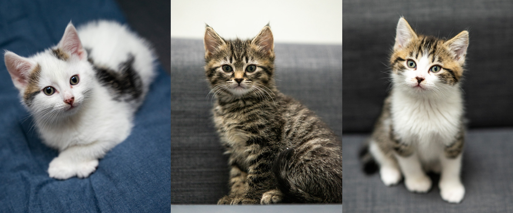
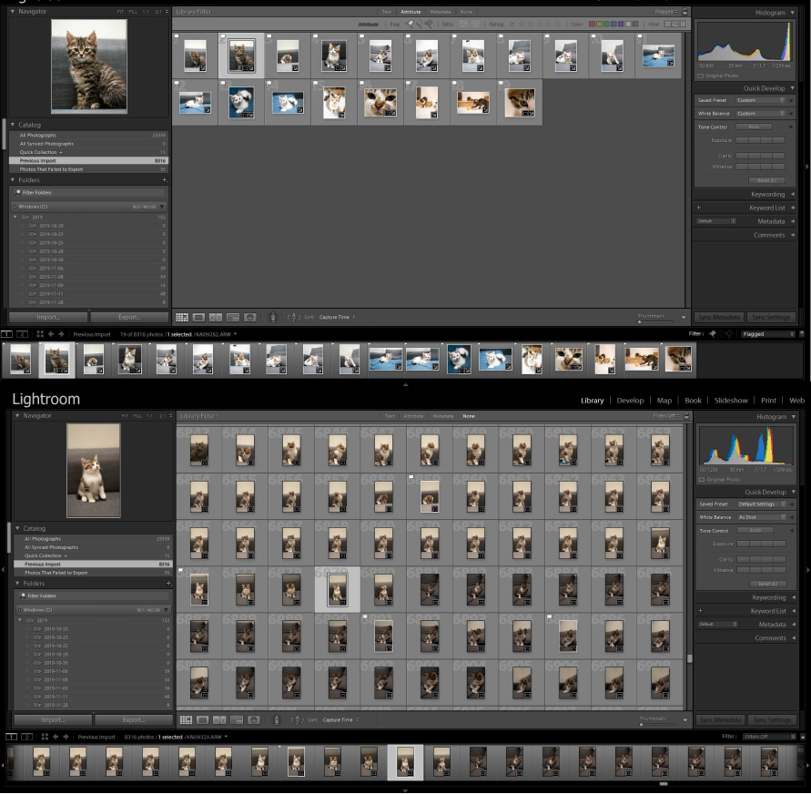
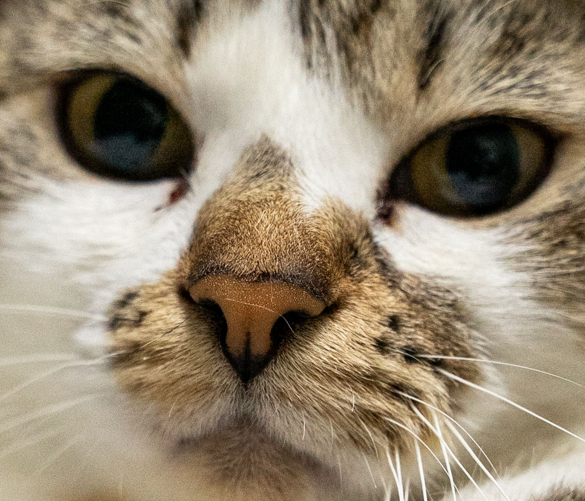
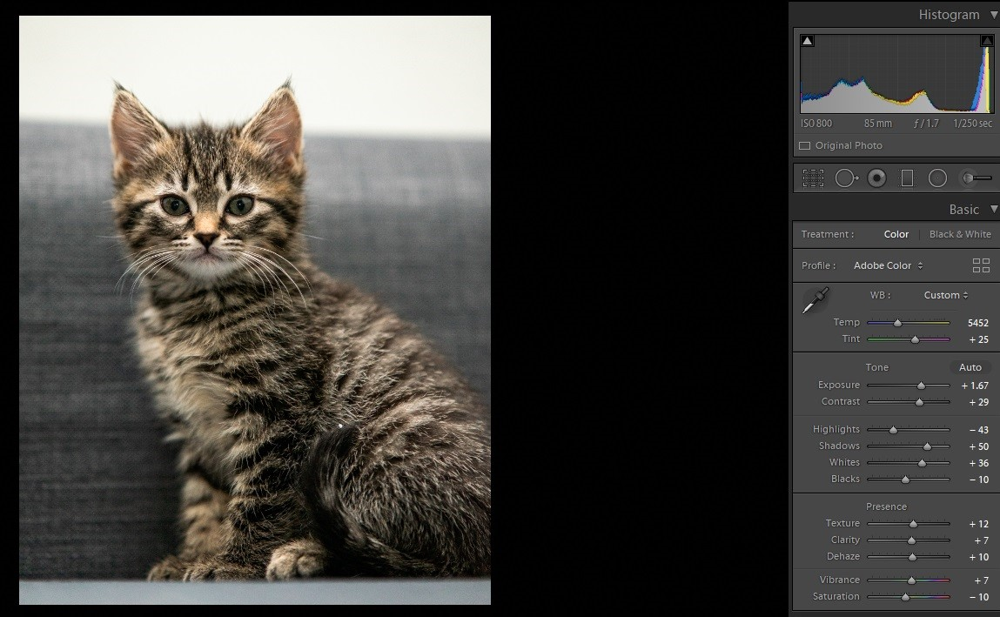

My best friend fosters kittens for a non-profit organisation, VOKRA. Every year they take in some kitties to foster so they can find their forever home. They potty train and de-worm their litter before they get picked up by their new human owners. The first step is for owners to look at the large database of kittens and choose one that matches what they are looking for and inquire for a visit. This means that the photos I take are very important in making a good first impression on adopters.
Where I shoot the kittens is of course in their home, which means that I will be working with limited space and lighting and I won’t be using a flash as it can scare the kittens when taking photos of them. The equipment that I use is a Sony A7II mirrorless camera and my primary lens of choice for this shoot is the Sigma Art 24-70mm F2.8 as it is my best lens for low-light shooting.

On shoot day, I will take an enormous amount of photos of every kitten solo and out in the living room,
then we just let them roam free and play and I’ll attempt to get some more natural shots of them having fun.
With the space and lighting being restricted some challenges most definitely arose.
One of them being the fact that I had to use a higher ISO setting due to the fact that my shutter
speed was increased because shooting fast and nibble moving kittens would make most of my photos
blurry with motion.
Not only this, the lens that I was using has an f-stop of 2.8 means I can shoot in lower light without cranking the ISO too much. But the downside to this is that the depth of field is very shallow. Meaning that only a small amount of the photo is actually in focus. Meaning I can easily miss the focus point when taking the photos as seen in the example below.
But with a little bit of post-processing and editing and just taking a whole bunch of photos allowed me to get many good shots of each kitten which my friend picked the best ones that would have a great impact on the adopters and the kittens were all adopted within a week of uploading them to the website!
In the future, I am going to be more prepared with better equipment and by using a slightly higher f-stop so I can use more photos that I took. With the power of Lightroom and Photoshop, photography is an incredibly powerful tool to make even the worst images look good. All it takes is patience, time, and practice which is what I love about photography.